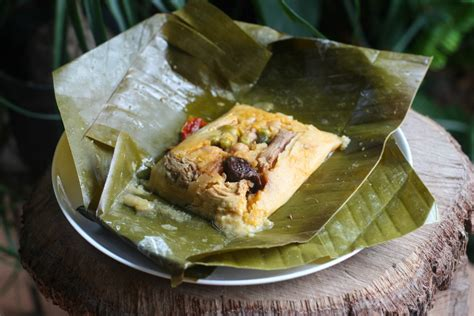

Tamales Costaricenses

Description
This dish is one of the traditional Christmastime foods. These tamales are cooked in pairs called "piñas" and commonly eaten for breakfast or an afternoon snack. Usually shared with family, friends, and neighbors, these tamales are definitely a labor of love.
The ingredients of these tamales can slightly differ from family to family or simply by personal preference, but generally they all have similarities. A bit of meat, a spoonful of rice, a pinch of this and a pinch of that, all gently nestled in a soft pillow of cornmeal dough and wrapped up tight in a banana leaf. Opening one up is just like opening up a present on Christams morning, you never really know what exactly will be in it!
Ingredients for Pork
- 3-4lb pork shoulder
- 1 tbsp mustard
- 1 tsp minced garlic
- 1/2 tsp black pepper
- 1 tsp salt
- 1 sweet pepper, large chunks
- 1-2 stalks of celery, large chunks
- Fresh cilantro, small handful
- Water
Steps for pork
- Rub the mustard onto the pork as a binder, then rub in the salt, pepper, and minced garlic.
- In a pressure cooker, brown the meat on all sides.
- After the meat is browned, add the vegetables and the water.
- Seal the lid of the pressure cooker and cook until the steam valve begins to sound.
- Once the valce sounds, cook for an additional 30 minutes.
- Slowly release the pressure from the pot before opening the lid.
- Remove the meat from the pot and let cool a bit before shredding the meat.
- While meat is cooling, pour liquid and vegetables from the pot into a blender and liguidfy to form a broth.
- Strain broth using a mesh strainer into a container, set aside for later.
- Once meat is cool enough to handle, shred into bit size pieces.
Ingredients for Rice
- 2 tsp neutral oil (vegetable, soy, canola, etc.)
- 2 tsp minced garlic
- 1 tbsp achiote paste
- 2 cups of white rice
- 3 cups of broth from pork
- 1 tsp salt
Steps for Rice
- Add oil to a medium pot over medium-high heat.
- Once oil is hot, add garlic and cook until fragrant, about 30 seconds.
- Next add the achiote paste, the rice, the broth, and salt. Mix until paste has dissolved.
- Cover with lid, lower heat to a simmer and let cook until all liquid has been absorbed. Stirring occasionally.
Ingredients for Masa*
- 500 grams of margarine
- 5 tbsp minced garlic
- 8 tbsp Salsa Lizano
- 8 cups Maseca Tamal (or equivalent in other brand)
- 1kg potatoes, peeled
- 40g beef bouillion
- 3 medium tomatoes
- 12 cups water
- Lard**
Steps for Masa
- In a large pot, bring water to a boil.
- Once boiling, salt the water and add potatoes.
- Cook until soft.
- While potatoes are cooking, prepare the beef broth by dissolving bouillion cubes in the water.
- After the potatoes have finished cooking, remove potatoes from liquid.
- Add tomaotes to reaming boiling water. Boil until the skins begin to split.
- Once, tomatoes are ready, remove from water and transfer to blender. Liquify.
- Mash potatoes, until completely smooth.
- Next, in large stockpot, melt margarine over medium-low heat.
- Once margine is warm, add minced garlic. Cook until fragrant.
- Then add Salsa Lizano, tomato liquid, Maseca, and mashed potatoes.
- Mix well.
- Next, add half of the beef broth to the potato mixture.
- Mix until well incorporated using a large, sturdy wooden spoon. Even better are your hands, if you don't mind getting a little dirty.
- Add remaining beef broth and continue to mix. Note: You may not need all the broth. You are looking for a consistency that is slighty wet, but holds together well.
- After broth has been added, slowly mix in lard, until you reach a desireable consistency.The consistency should be smooth, not gritty.
- Once you have the desired consistency, cook the masa over low heat for 30 minutes, stirring constantly to prevent the bottom from burning.
Ingredients to Assemble Tamales
- 1kg Banana leaves
- 1 can peas
- 50 green olives with pimento
- 50 slices carrots, boiled
- 50 strips of roasted sweet pepper
- 50 pieces sliced prunes
- Optional 6-7 hard boiled eggs, peeled, cut into 8 wedges
- Butcher's twine to tie up the tamales
Assembly
- Before starting assmebly, this might be agood time to call over several friends or family memebers to help.
- Set out all ingredients in an area large enought to fit everything, i.e. large kitchen table, large counter, etc.
- Tear or cut banana leave into 2 sizes - Size 1: square based on the width of the leave Size 2: Rectangle using the width of the leave, opposite side should be a bit thinner than the width of the leave.
- Lay the thinner rectangle on top (lines of leaves should be horizontal) of the larger square (lines of the leaves should be vertical)
- Add some masa to the center of the leaves, about 1/2-3/4 cup depending on how large you want the tamales.
- Flatten in the masa a bit and shape into a rough square-ish shape.
- Add desired fillings rice, meat, sausage, olive, pepper, peas, carrot, prune, egg. Add as much of the fillings as you want, but remember the more you use, the harder it is to close the tamal.
- After all fillings have been added, fold the leaves to close the tamal.
- I prefer to fold the sides first, then fold over the top and bottom.
- Repeat steps 3-7 for second tamal.
- Once you have 2 tamales, place the folded sides together to make a bundle. Then using the twine, tie the tamales together like you are tying a ribbon on a present.
- Place first "piña" or bundle in boiling water and cook for about 40-45 minutes. This will be your test batch to see how long they need to cook. If after 40-45 min they are not cooked to your liking, place back in water for abotu 15-20 minutes.
- While the test batch is cooking contniue assmbly of the rest of the tamales.
- Once all assembly is finished and the test batch is finished cooking, place the tamales in the boiling water to cook. This may need to be done in batched depending on the size of your pot and the number of bundles you have.
- Cook for desired length of time.
- Once the tamales are finished cooking remove from water and let cool for at least 3 hours. This will allow the masa to firm.
- After the tamales have cooled, enjoy! Serve with extra Salsa Lizano (and hot sauce if you like). And don't forget to share with family and friends!
Notes
- *The recipe for the masa should make between 60-100 tamales or 30-50 piñas, the amount of masa used will vary based on the size of the tamales.
- **Used to make the texture of the masa smoother